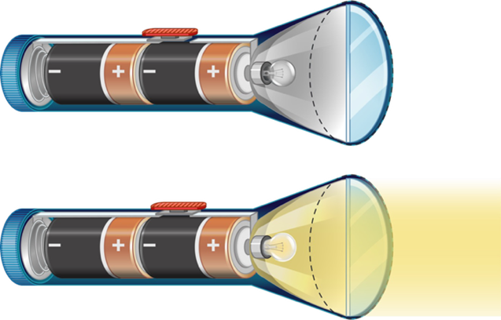

Контрольні запитання
Вправа №33
б) Під час роботи: хімічна енергія перетворюється на електричну.
Основні визначення
Електричне коло — це сукупність пристроїв, з'єднаних провідниками, що призначені для одержання, передавання та перетворення електричної енергії.
Склад електричного кола
Джерело струму
Батареї, акумулятори, генератори.
Споживачі
Лампи, двигуни, нагрівачі.
Керування
Вимикачі, ключі, кнопки.
Провідники
З'єднувальні металеві дроти.
Умовні позначення елементів
Напрямок струму
За напрямок струму прийнято напрямок від позитивного (+) полюса джерела до негативного (-).
Розв'язування задач
Які елементи містить електричний ліхтарик? Опишіть функцію кожного з них. Чому лампа не світиться в одному з випадків?

Учень зібрав коло з провідників, лампи та дзвінка. Чому воно не працює? Що треба додати, щоб коло стало робочим?
Накресліть схему: один нагрівальний елемент з’єднаний із гальванічним елементом та ключем. Стрілками покажіть напрямок струму.